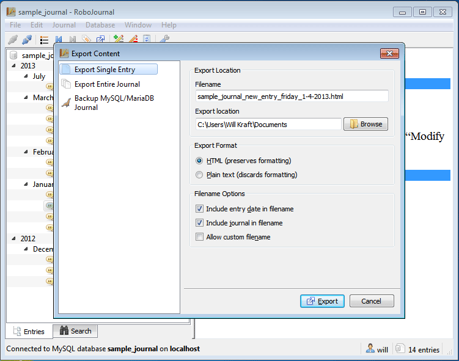
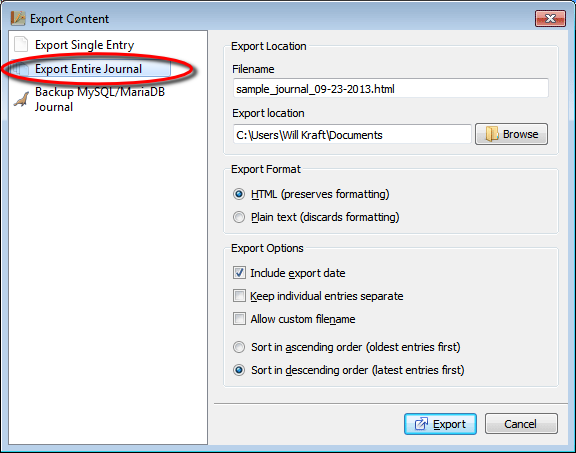
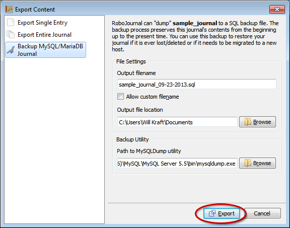
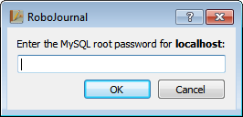

for version 0.5
Exporting Journal Entries
Sections
Overview
RoboJournal stores all journals as databases. Databases like MySQL are not discrete files on your hard drive; instead, they are abstract entities you work with through an intermediary program like RoboJournal. The intermediary program relays data between the client (your computer) and the actual journal database residing on the host. While the journal appears to be on your computer, this is not truly the case unless you are running the database server on localhost. Since the journal databases are abstract entities, it is normally difficult to extract data from them unless you dump the entire database to disk as a file (the most common backup method). Fortunately, RoboJournal provides a way to directly extract journal content in a form that can be easily backed up or copied.
To begin, select
the entry you wish to export (or any entry, if you wish to export the
entire
journal) and click the Export Entry
toolbar button. Figure
1: Select an entry (indicated
by the
large oval) and click the Export Content toolbar
button to
display the Export Content dialog.
Figure
1: Select an entry (indicated
by the
large oval) and click the Export Content toolbar
button to
display the Export Content dialog.
This action displays the Export Content window:
Figure 2: The Export Content window is displayed with the selected entry already pre-loaded.
RoboJournal's export functionality has been dramatically improved
in version 0.5. The new design features a page-based
interface,
much like the new Journal Creator
and
the new Preferences window introduced
in version
0.4. The Export Content window offers a menu with three items on the
left side of its interface with its remaining space devoted to options
related to the currently-selected item. Unlike the old entry exporter
(which separated functionality by
use of a
tabbed widget in a way that could potentially be confusing) the new
design
separates functionality by page; each page is dedicated to a a specific
type of
export function.
The Export Content window always displays the Export
single entry page by default. You can switch to a different
page at any time by clicking a different item on the list. When you
click the Export button,
RoboJournal applies actions that are relevant to the current page only
(all settings on inactive pages are ignored). The following
sections describe the various pages (and their functions) in greater
detail.
Exporting a Single Entry
When initially opened, the Export Content window is automatically
configured to
export the
entry you previously selected from the Timeline on the RoboJournal main
window:  Figure
3: The "Export
Single
Entry" page allows you to export the current (selected) entry from the
main
window.
Figure
3: The "Export
Single
Entry" page allows you to export the current (selected) entry from the
main
window.
If you need to change any of the settings (including file type or
export
destination), you must do so before beginning the export operation.
Exporting a single entry is designed to be extremely simple since
most
configuration requirements are pre-set in advance. The available
options control the output file properties.
Generally, you only need to click the Export button (shown in Figure 3) after selecting the entry you wish to export from the Timeline on the RoboJournal main window. The Export Content window provides output and automatically closes once its task is finished.
Single Export Options
The following table explains each option on the Export Single Entry page in greater detail:
| Filename | The Filename field determines
what name the entry content is saved under on your hard drive. This
field is read-only by default and cannot be edited directly unless the Allow custom filename option is
enabled. |
| Export Location | The Export Location field lists the path to the folder where the output file will be saved. Click the Browse button to the right of this field to select a different folder. |
| Export Format | The Export Format options determine which type
of file is created during the export operation. The HTML
option produces a HTML4-compliant document that is viewable in any web
browser. The Plain text option produces a text file
that is compatible with any text editor (e.g. Vim, Notepad, Emacs,
etc.).
For best results, you should use HTML output because it preserves all document formatting (bold, italic, etc. text) while plain text output does not. As such, the option you should choose depends on your requirements. |
| Include entry date in filename | This option appends the current date, in day of week_mm-dd-yyyy format, to the filename. For best results, you should leave this option enabled each time you export an entry. |
| Include journal in filename | If checked, this option inserts the journal name at the beginning of the Filename field (i.e. journal name_entry title_entry date). You should leave this option enabled for best results because the resulting filename makes it easy to group exported entries from the same journal together and it provides a way for you to easily recognize which journal an entry came from. |
| Allow custom filename | When checked, this option allows you to directly edit the Filename field's contents. You should enable this feature if it is necessary to assign a custom filename to an output file. |
Exporting the Entire Journal
In addition to exporting entries one at a time, RoboJournal also allows you to export an entire journal at once. This task can be done in two different ways. RoboJournal can merge each entry into a single large file (the "original" method featured since version 0.3). In version 0.5, RoboJournal introduces a new bulk export method where a journal can be exported as a set of discrete files. This new feature produces the same results as manually exporting the entire journal one entry at a time but is much more efficient and convenient. Under this new method, each entry is saved individually and is placed with the others in a predetermined destination folder bearing the name of the journal and the export date.
You can access the bulk-export function through the following procedure:
- On the RoboJournal main window, select an entry from the Timeline and click the Export Content toolbar button (as shown in Figure 1) to display the Export Content window. It does not matter which entry you choose to begin this process.
- The Export Content window is displayed. Select the Export Entire Journal list item on the left side of the Export Content window to display the appropriate options:Figure 4: The "Export Entire Journal" page allows you to output the contents of an entire journal in one simple process.
- Adjust the options in the Export Location, Export Format, and Export Options groups if necessary. Each of these settings and their effects are addressed in-depth in the Bulk Export Options section. The default configuration produces a single HTML-based file (with the journal name and the export date in the filename) with all journal entries arranged in descending order.
- Click the Export button to continue. The Export
Content window provides output and automatically closes once its task
is finished.
Bulk Export Options
The following table contains a full explanation of all options that can be applied to bulk export operations and the effects each option has on the output file(s):
| Filename* | The Filename field determines what name the entry content is saved under on your hard drive. |
| Export location | This field determines where the output file is stored. If the Keep individual entries separate option is enabled, the output files are stored in a custom folder (bearing the journal name and the export date) within the directory specified in the Export location field. Click the Browse button to the right of this field to select a different folder. |
| Export Format | The Export Format options determine which type
of file(s() are created during the export operation. The HTML
option produces HTML4-compliant document(s) that are viewable in any
web browser. The Plain text option produces text
file(s) that are compatible with any text editor (e.g. Vim, Notepad,
Emacs, etc.).
For best results, you should use HTML output because it preserves all document formatting (bold, italic, etc. text) while plain text output does not. As such, the option you should choose depends on your requirements. |
| Include export date* | If enabled, this option causes the current export date to be included in the filename (i.e. sample_journal_09-03-2013.html). This feature is useful for archival purposes since it indicates what a journal contained on a specific date. |
| Keep individual entries separate | If checked, this option causes RoboJournal to
export the current journal as a set of discrete files, with one entry
per file. Enabling this option disables many other settings on the Export
entire journal page that are only relevant to the task of
creating a single large export file.
The output files from the export operation are saved in a custom folder contained within the current Export location directory. RoboJournal automatically creates the export folder during the procedure so there is no need to manually create it in advance. Each file in the folder is marked with the journal name, its position in the series, and the entry title (i.e. sample_journal_1_of_15_sample_entry.html). Exporting the journal as a series of individual entries always arranges the content in ascending chronological order, with the oldest entry being the first item in the set. |
| Allow custom filename* | When selected, this option allows you to directly edit the Filename field's contents. You should enable this feature if the situation requires you to assign a custom filename to the output file. |
| Sort in ascending/descending order* | These two options determine the chronological order in which entries are merged into the output file. Arranging entries in ascending order causes the oldest entry to be listed first while descending order places the latest entry first in the sequence. RoboJournal chooses the descending arrangement by default because it assumes the most recent entries are the most important to the reader (and should therefore be listed first). |
* RoboJournal locks these options (and ignores their current settings) while the Keep individual entries separate option is enabled because the affected options are non-applicable to multiple files.
Creating a Backup of Your Journal with MySQLDump
RoboJournal 0.5 introduces a new feature that allows you to easily create a backup of the current active journal. Backing up a journal is useful because it allows you to "freeze" the current condition of your journal at a specific moment in time. You can then use this backup at a later time to restore or revert your journal to the state it was in when the backup was created. For best results, you should create backups on a regular basis and store them in a safe place in case the working copy of the database becomes corrupt or is lost due to equipment failure.
RoboJournal uses a utility called MySQLDump to create the backups (MySQLDump is usually distributed along with MySQL). In the past, this task required you to invoke MySQLDump manually via the command line but RoboJournal is now capable of directly interfacing with MySQLDump through an easy-to-use graphical user interface. At the moment, RoboJournal offers no direct way to restore databases from backups but that feature is planned for future versions.
You can export your journals by completing the following procedure:
- On the RoboJournal main window, select an entry from the Chronological Entry List and click the Export Content toolbar button (as shown in Figure 1) to display the Export Content window. For this procedure, it does not matter which entry you choose from the list.
- Click the Backup MySQL Journal list item on the left side of the Export Content window to display the backup-related options (Figure 5): Figure 5: The "Backup MySQL Journal" page provides an easy-to-use interface for MySQLDump.
- Make all necessary changes. The default settings produce a .sql file bearing the journal name and the export date (i.e. sample_journal_09-04-2013) that is saved in your home folder's Documents sub-directory ("My Documents" on Windows XP and older).
- Click the Export button to begin the operation: Figure 6: Click the Export button when ready.
- Enter the root password for MySQL when prompted and click the OK
button to continue:Figure 7: Enter the current MySQL
server's root password to continue. RoboJournal requires
root-level access for MySQLDump operations because it must lock the
current journal's tables (a function that is normally restricted to the
root account) before it can complete the dump operation. This
prevents the possibility of edit collisions, which are attempts by two
or more users to modify the same database simultaneously.
- The Export Content window closes itself once its task is
complete.
Backup Options
The following table contains a full explanation of all options that can be applied to backup operations and the effects each option has on the output file:
| Output filename |
The Output filename field
determines the name
the entry content is saved under on your hard drive. This file always
has a .sql extension. |
| Allow custom filename |
If checked, RoboJournal allows you to choose
your own filename by directly editing the contents of the Output
filename field (which are otherwise read-only). Despite the
freedom this feature offers, RoboJournal strictly enforces certain
guidelines: When you click the Export button, RoboJournal corrects any errors it detects in the filename, including replacing spaces with underscore ("_") characters and removing forbidden characters like [semi]colons, slashes, etc. As you edit the text in the field, RoboJournal constantly ensures the filename you have chosen ends with an appropriate .sql extension at all times. When the Allow custom filename field is unchecked, RoboJournal utilizes a [journal name]_[export date].sql naming convention (i.e. sample_journal_09-23-2013) for all output files. |
| Output file location |
This field determines where the output file is
saved (the Documents folder in your home directory is the default
location). Click the Browse button to the right of
this field to select a different folder. |
| Path to MySQLDump utility |
This field lists the absolute path to the
MySQLDump executable on your computer. Click the Browse
button to the right of this field to manually locate MySQLDump. While running on Windows, RoboJournal restricts the file browser to mysqldump.exe but there are no such restrictions on Linux/Unix because executables have no extension on those operating systems. Once you have located the MySQLDump executable with the file browser, RoboJournal saves the selected pathname so you will not need to browse for it again. |
Copyright © 2013 by Will Kraft. All parts of the RoboJournal Documentation are subject to the terms of the GNU Free Documentation License.